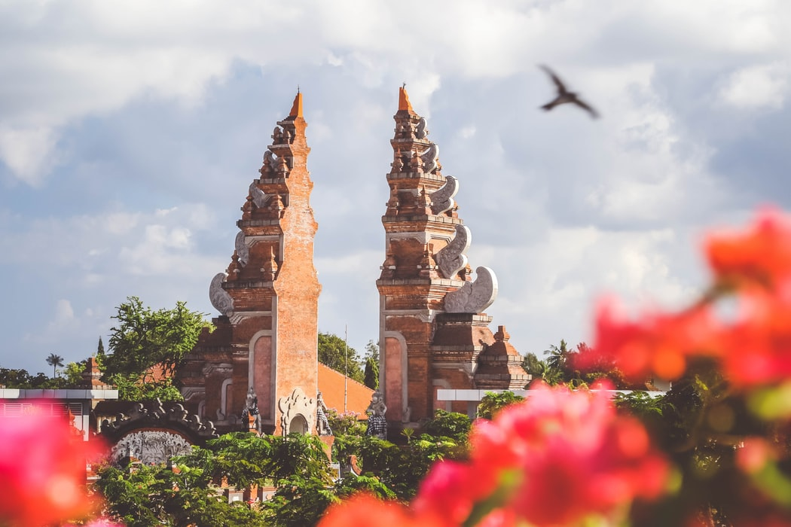

Bali, Indonesia
Bali is one of the most famous island in the Indonesian archipelago. The island’s home to an ancient culture that's known for its warm hospitality.
Over the years, the grace and charm of Bali and its people have earned this tiny Indonesian island numerous sobriquets of praise and homage including Island of the Gods, The Last Paradise, Land of a Thousand Temples, and Morning of the World.
Varied landscape of hills and mountains, rugged coastlines and sandy beaches, lush rice terraces and barren volcanic hillsides all providing a picturesque backdrop to its colourful, deeply spiritual and unique culture, stakes a serious claim to be paradise on earth.
World-class surfing and diving, a large number of cultural, historical and palaces set against stunning natural backdrops are some of its top attractions which Bali as the world's top destination.
Bali has something to offer a very broad market of visitors from young back-packers right through to the super-rich. Amazing beach resorts and luxury resorts in any of Bali’s famous areas. These include Kuta, Jimbaran, Seminyak, Tanjung Benoa, Candidasa, Lovina, Sanur and Nusa Dua where most of the great hotels and villas are right on the beach.
Bali also offers plenty for adventure-seekers. From white water rafting, diving, volcano hiking, jungle trekking, water sports, cycling, and much more. There are many more off-the-beaten-track spots around this magical island worth discovering.
Bali is the Island of God in Paradise among Indonesian tourism. Furthermore, it is a perfect tourist destination to enjoy the holiday with your family as well as collages. This tropical paradise has a unique blend of modern tourist facilities combined with wonderful shopping, a rich past as well as heritage sites. The Balinese people are proud of having preserved their unique Hindu culture against the advance of Islam, the dominant religion throughout Indonesia. It is also the Balinese festivals in a magnificent temple as well as palaces. We can find some best surfing spots on the island on the western side. Meanwhile, the eastern side is a wonderful haven for families, with beautiful white sand beaches and gentle seas. Once you explore the Indonesian tourism please do not miss to visit Bali.